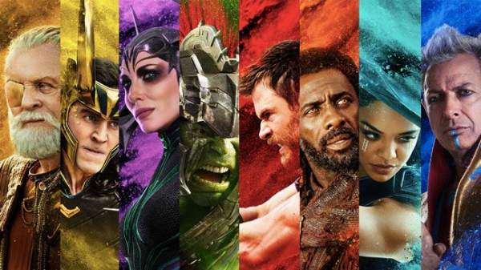
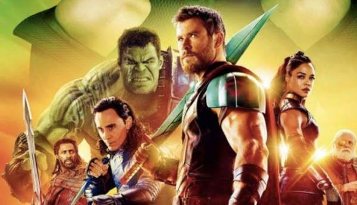
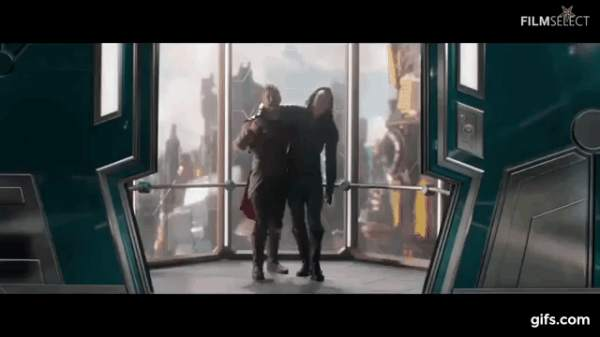
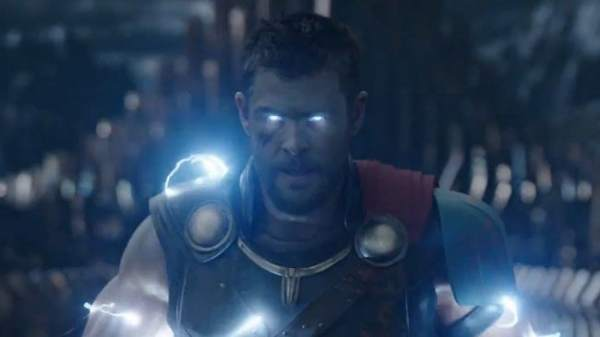
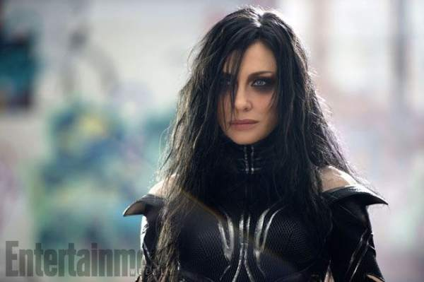
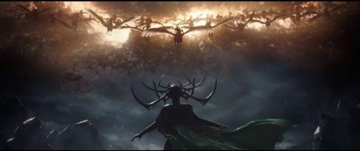
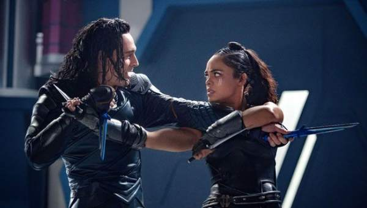

Thor: Ragnarok là phần phim thứ ba trong series phim về Thần Sấm Thor, các sự kiện trong phần phim lần này diễn ra 2 năm sau khi trận chiến giữa Avengers và Ultron trên Trái Đất kết thúc, đồng thờì đây cũng là quãng thời gian anh rời xa quê nhà Asgard. Sau những giấc mơ kỳ lạ và điềm báo về tận thế Ragnarok, Thor đã lập tức rời khỏi Midgard (Trái Đất) để tìm kiếm và tiêu diệt những mối hiểm họa mà anh cho là có thể gây ra nguy hiểm cho quê hương , đất mẹ Asgard thân yêu. Thor đã đi khắp vũ trụ để tìm kiếm những viên đã vô cực (Infinity Stones) trong vô vọng, cuối cùng anh đã dừng chân tại nơi tên quỷ lửa Suntur cai trị. Thor nhanh chóng tiêu diệt Suntur và nghĩ rằng anhd đã chặn đứng được Ragnarok. Quay trở về Asgard, Thor lật tẩy màn kịch của Loki trong những năm qua khi vị Thần Xảo Trá bỏ bùa vua cha Odin và đóng giả ông để ngồi lên ngai vàng. Thor ép Loki đưa mình quay trở lại Trái Đất để tìm vua cha, tại đây cả hai đã nhận được sự giúp đỡ của Doctor Strange. Gặp lại vua chưa được bao lâu thì Thor và Loki lại phải đối mặt với mối hiểm họa đến từ nữ thần chết Hela, trong trận chiến Hela đã bóp nát chiếc búa Mjolnir và đánh bay Thor ra đến một hành tinh xa xôi tên Sakar. Tại đây Thor đã gặp lại Hulk và kết bạn với Valkyrie. Tình hình quê nhà ngày càng trở nên tồi tệ, với sự giúp đỡ của những người bạn Thor quay trở lại Asgard và ngăn chặn không cho Ragnarok diễn ra.  Không còn nghi ngờ gì nữa, Thor: Ragnarok chính là phần phim Thor hay nhất từ trước tới này, thậm chí nó là bộ phim xuất sắc nhất của Marvel trong năm 2017. Xét trên phương diện tổng thể Thor: Ragnarok là một bộ phim hoàn hảo, kết hợp được đầy đủ các yếu tố có thể đánh bại các khán giả khó tính. Nếu bạn là một người yêu thích phong cách làm phim của Marvel và những phim với màu sắc tươi sáng thì không thể nào có thể bỏ qua Thor: Ragnarok. Sau một loạt những chỉ trích của giới chuyên môn dành cho hai phần phim Thor đầu tiên, Marvel đã quyết định chuyển hướng và thay máu cho series phim này,Thor: Ragnarok là một canh bạc đầy may rủi một là nó sẽ đưa Thor và MCU lên một tầm cao mới, hai là sẽ kết thúc series phim của Thor trong lặng lẽ, ê chề. Và tất cả những sự cố gắng và nỗ lực không ngừng của Marvel đã được đền đáp, Thor: Ragnarok là cú lội ngược dòng, thay đổi mọi định kiến không chỉ của khán giả mà còn của các nhà phê bình về thương hiệu phim Thor.  Khác hẳn với hai phần phim đầu tiên, Ragnarok là bộ phim mang phong cách tưng tửng, đôi lúc hơi hoang đường nhưng vô cùng ly kỳ và hấp dẫn. Người có công lao lớn nhất đối với sự chuyển mình của Thor chính là đạo diễn tài ba Taika Waititi, nhờ có ông mà Thor đã như được tái sinh. Điểm cộng đầu tiên cho Thor chính là cốt truyện mạch lạc, sáng tạo nhưng vẫn bám vào nguyên gốc tác truyện tranh. Sự kiện Ragnarok và Hulk Planet là 2 sự kiện quan trọng và vô cùng nổi tiếng của Marvel Comic, vì thế việc kết hợp hai cốt truyện này là một thử thách đối với bất kỳ nhà biên kịch nào, tuy nhiên Eric Pearson, Craig Kyle và Christopher Yost đã thành công khi dung hòa chúng và tạo ra một kịch bản cực kỳ thú vị. Người xem vẫn tìm thấy tinh thần bi tráng của Ragnarok nhưng vẫn cảm nhận được sự sôi nổi trong Planet Hulk. Dĩ nhiên đây là phim riêng của Thor nên tất cả sẽ xoay quanh nhân vật này, đây là một điểm cải thiện đáng kể của Thor: Ragnarok so với những phần phim trước, bên cạnh việc tuân thủ cốt truyện nguyên tác thì vẫn có nhiều chi tiết sáng tạo và chỉnh sửa để phù hợp khi đưa lên màn ảnh rộng. Thor: Ragnarok đã thay đổi nguồn gốc của một số nhân vật và một số tình tiết, tuy nhiên nhìn chung những sự biến đổi này đều ở mức chấp nhận được và khá hợp lý trên tổng thể và định hướng phát triển của Thor và của MCU mà Marvel đã vạch ra trước đó.  Nhịp phim của Thor: Ragnarok nhanh, nghẹt thở, khán giả sẽ không muốn bỏ lỡ bất kỳ giây phút nào vì các bộ phim không hề có một tình tiết nào thừa thãi, tất cả đều được đưa về ở mức đủ. Suốt từ những phút đầu tới khi phim kết thúc, Ragnarok vẫn giữ được sự hấp dẫn mà ít bộ phim nào có thể làm được. Bộ phim bắt đầu nhanh chóng, dễ diểu, không rườm rà hay bị sa đà vào việc giải thích các sự kiện hay các tình tiết của những phim thuộc MCU phát hành trước đó. Các nút thắt được đưa ra liên tục và các tình tiết mở nút dồn dập được đưa ra, càng về cuối phim thì nhịp độ các tình tiết lại càng được đẩy nhanh hơn. Các plot twist khá khó đoán và vô cùng thú vị, đảm bảo khán giả sẽ được đưa từ bất ngờ này đến bất ngờ khác, có thể ban đầu họ sẽ đoán là A nhưng những gì xảy ra sẽ phải khiến người xem kinh ngạc. Đối với các fan cứng của truyện tranh Marvel thì cũng có rất nhiều tình tiết sẽ để lại cho hỏi những dấu chấm hỏi ví dụ như chi tiết Ngọn Lửa Vĩnh Hằng (The Enternal Flame) có thể hồi sinh người chết.. hay đoạn credit đầu tiên… Nhìn chung, với một bộ phim đậm chất giải trí như Thor: Ragnarok thì kịch bản và việc dẫn dắt các tình tiết phim đã tạo ra một hiệu ứng quá thành công.  Điểm cộng thứ hai cho Thor: Ragnarok chính là phong cách đậm chất Taika Waititi. Trước khi đến với Thor, đạo diễn Waititi nổi tiếng với một những bộ phim hài hước, trào phúng nhưng vô cùng tinh tế và giàu ý nghĩa nhân sinh, và vị đạo diễn đáng kính này đã vận dụng hết thế mạnh của mình để đưa vào trong Ragnarok. Bộ phim được đưa về gần hơn với phong cách mà các phim của Marvel vẫn đang theo đuổi đó là dòn phim siêu anh hùng tươi sáng và hài hước, tuy nhiên không phải vì thế mà Thor: Ragnarok lại mất đi cái chất riêng của mình. Tông màu của phim được nâng lên rõ rệt so với The Dark World và Thor, nhưng lại chịu nhiều ảnh hưởng của các phim hành động thập niên 80. Các cảnh quay, góc quay hay những đoạn chuyển cảnh đều vô cùng tinh tế và gợi nhắc cho khán giả nhớ tới một trong những thời kỳ hoàng kim của nền công nghiệp điện ảnh. Như đã đề cập ở trên, Thor: Ragnarok có thể sẽ làm bạn cười đến ngoác miệng, vì đây là bộ phim của Waititi nên nó phải là dấu ấn của riêng ông. Các tình tiết gây cười được cài đan xen một cách duyên dáng, dù đôi chút hơi quá lố và vô lý tạo cho cảm giác giống như những bộ phim hài nhảm nhưng nhờ có nó mà Thor: Ragnarok bớt nặng nề và hay hơn gấp nhiều lần. Bộ phim không ẩn chứa quá nhiều ý nghĩa, nhưng những thông điệp nhân văn mà bộ phim truyền tải thì không thể xem nhẹ, Thor: Ragnarok ca ngợi tình phụ tử thiêng liêng, tình yêu nước và dân tộc cùng lòng dũng cảm. Các yếu tố thần thoại cùng phong cách hài hước điên rồ đã hòa quện và tạo ra một sự cộng hưởng kỳ lạ, nó không chỉ thổi một làn gió mới cho thương hiệu phim riêng của Thor mà còn đưa chất lượng phim của Marvel lên một tầm cao mới.  Điểm cộng thứ ba của Thor: Ragnarok chính là hệ thống nhân vật được xây dựng vô cùng thành công và ấn tượng. Từ các nhân vật chính như Thor, Loki , Hela cho đến các nhân vật phụ như Hemidall, Skurge hay Grand Master đều có đất diễn, đều có câu truyện riêng và phát triển tâm lý vô cùng hợp lý. Nếu như trong hai phần phim trước Thor luôn bị Loki lấn lướt và được xây dựng hình ảnh như một nhân vật chân tay nhanh hơn đầu óc, thì lần này Thor đã được lột xác hoàn toàn. Vẫn là bản tính anh hùng nóng nẩy, nhưng Thor giờ đây đã tiết chế được bản thân, khôn ngoan hơn, trưởng thành hơn nhưng vẫn ngây ngô. Khán giả sẽ phải bất ngờ khi chính Thor giờ đây là người dẫn dắt và vạch ra mọi kế hoạch cũng như nhận ra bản chất của Ragnarok, đến ngay cả Loki cũng không thể lừa được Thor. Đặc biệt với những ai phàn nàn về việc sức mạnh của Thor trong các phần phim trước bị “tối giảm” đi quá nhiều thì trong phần phim này họ sẽ phải thay đổi quan điểm, Thor sẽ trở thành một Thần Sấm thực thụ. Nhờ có màn hóa thân cực kỳ xuất sắc của Chris Hemsworth nên chúng ta mới được thưởng thức một Thor hoàn toàn mới, bá đạo hơn nhưng cũng gần gũi và lôi cuốn hơn. Đặc biệt các nhân vậ nữ trong phim khá được ưu ái, nhân vật Hela – phản diện chính của phim, dưới diễn xuất điêu luyện của Cate Blanchett chúng ta sẽ được gặp một vị Thần Chết quyền lực, khát máu và điên rồ với khát vọng giết chóc và ngôi vương của Asgard. Mục đích, động cơ của nhân vật này hoàn toàn phù hợp với diễn biến phim, từ đầu tới cuối ta sẽ thấy một Hela bất khả chiến bại nhưng luôn tìm kiếm sự công nhận và ước muốn thực hiện những dục vọng điên rồ. Nhân vật Valkyrie do Tessa Thompson thủ vai cũng khá ấn tượng, câu truyện của nhân vật này cũng được xây dựng và phát triển hợp lý, với một diễn viên thực lực như Tessa thì việc khiến Valkyrie là một trong những nhân vật ấn tượng nhất không phải là điều quá khó khăn. Bên cạnh đó các diễn viên như Tom Hiddleston, Mark Ruffalo, Idris Elba…. Đều hoàn thành tốt vai trò của mình.  Sẽ là một thiếu sót nếu không dành lời khen ngợi cho kỹ xảo và hiệu ứng hình ảnh của Thor: Ragnarok, không ngoa khi nói rằng đây là bộ phim có hiệu ứng hình ảnh đẹp nhất của Marvel từ trước tới nay. Các chi tiết đồ họa, hiệu ứng đặc biệt đều được tỉ mỉ chăm chút từng chút, vì thế mà chúng ta sẽ được trải nghiệm một chuyến phiêu lưu trong dải ngân hà chân thật đến bất ngờ. Các chuyển động của các nhân vật được tạo ra từ CGI rất mềm mại và chân thực (ví dụ như Surtur), các khung cảnh thiên nhiên thì tuyệt đẹp, các hiệu ứng trong những trận chiến hay những cảnh phiêu lưu thì thỏa mãn được mọi con mắt khó tính. Nếu để chấm điểm cho phần hình ảnh của Thor: Ragnarok thì có lẽ thang điểm A hay 100 không thể nào đo được hết sự tuyệt vời của nó. Cùng với đó các pha hành động mãn nhãn và nghẹt thở đảm bảo sẽ làm hài lòng những khán giả yêu thích các bộ phim hành động, quy mô các trận đánh trong Thor: Ragnarok thậm chí còn ác liệt hơn Civil War hay Avengers. Vì là cuộc chiến giữa các vị thần nên chắc chắc tầm cỡ của chúng cũng phải thuộc hàng “khủng”. Các màn cận chiến cũng rất thuần thục và đẹp mắt, có lẽ trận chiến giữa Thor và Hulk, Thor và Hela là đáng nhớ hơn cả. Phần nhạc phim cũng khá ổn, giai điệu bài Immigrants Song rất phù hợp với không khí của bộ phim, bên cạnh đó Thor: Ragnarok cũng dùng lại nhạc nền của Thor và Thor: The Dark World để tạo thêm sự bi tráng.  Dù cho vẫn còn một số những hạt sạn, nhưng không thể phủ nhận Thor: Ragnarok là một trải nghiệm vô cùng đáng nhớ và tuyệt vời. Chắc chắn bạn sẽ không bỏ phí mất 130 phút cuộc đời để thương thức một siêu phẩm điện ảnh, bộ phim hứa hẹn sẽ mang đến giây phút thư giãn sảng khoái và xô đổ nhiều kỷ lục doanh thu hoành tráng. Chấm Điểm: 4/5
Nguồn: Bossss - tinhte.vn